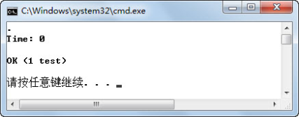
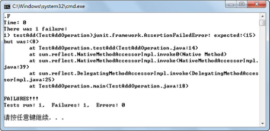
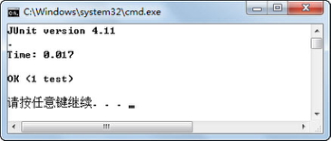
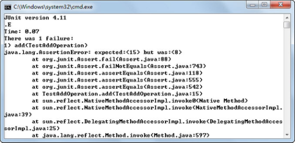

9.1 JUnit初探
JUnit是一个Java语言的单元测试框架，现已成为xUnit家族中最为成功的一个。JUnit 是Java语言事实上的标准测试库，多数Java的开发环境都已经集成了JUnit作为单元测试的工具。
在JUnit4推出前，由于三年未做更新，地位受到了其他Java单元测试工具的挑战。相对JUnit3而言，JUnit4是一个全新的Java单元测试框架，最大的特点是利用JDK1.5的注解特性简化测试用例的编写（所以要使用JUnit4，要求JDK必须是JDK1.5或以上版本）。
9.1.1 “加”类JUnit3测试
首先从最简单的一个案例开始，学习如何使用JUnit3和JUnit4进行单元测试。被测对象“加”类的代码如下：
public class AddOperation{
public int add(int x,int y){
return x + y;
}
}
接下来使用JUnit3对“加”类进行单元测试，测试前需要导入JUnit3软件包。具体代码如下（其中对部分代码进行了注释，方便大家阅读）：
import junit.framework.*;
public class TestAddOperation extends TestCase{
public void setUp() throws Exception{}
public void tearDown() throws Exception{}
//测试AddOperation类的add()方法
public void testAdd(){
//输入值
int x = 3;
int y = 5;
AddOperation instance = new AddOperation();
int expResult = 8; //预期结果
int result = instance.add(x, y); //获取实际结果
//通过断言判断实际结果和预期结果的差异，前者为预期，后者为实际
assertEquals(expResult,result);
}
}
从上面的代码可以看出，使用JUnit3进行单元测试，单元测试类TestAddOperation必须继承自 TestCase，执行测试的方法必须以test开头，并且使用各种类型的断言判断实际结果和预期结果的差异。
该单元测试类测试了被测类AddOperation中的add()方法。编译、运行程序（运行程序的命令为java -ea junit.textui.TestRunner TestAddOperation，含义为用JUnit3文本运行机的方式执行单元测试类TestAddOperation。），因为通过断言判断的add()方法的实际运行结果3+5=8和预期结果8一致，所以单元测试运行结果如图9. 1所示。

图9.1 JUnit3测试“加”类显示结果一
假设针对该“加”类有这样的测试用例，输入数据仍然为3和5，预期结果为15，再次编译、运行程序，单元测试运行结果如图9.2所示。
图9.2 JUnit3测试“加”类显示结果二
从运行结果可以看出，JUnit3单元测试框架发现，针对AddOperation类的add()方法进行单元测试，实际运行结果3+5=8和预期结果15不一致，所以提示出现了一个失败，并且明确指出了失败的原因。
9.1.2 “加”类JUnit4测试
同样对“加”类进行单元测试，不过这次是使用 JUnit4 进行单元测试，测试前需要先导入JUnit4软件包，具体代码如下：
import org.junit.*;
import static org.junit.Assert.*;
public class TestAddOperation{
@Before
public void setUp() throws Exception{}
@After
public void tearDown() throws Exception{}
@Test//测试AddOperation类的add()方法
public void add(){
int x = 3;
int y = 5;
AddOperation instance = new AddOperation();
int expResult = 8;
int result = instance.add(x, y);
assertEquals(expResult,result);
}
}
注意，使用JUnit4对AddOperation类中的add()方法进行单元测试，导入的是org.junit包里的内容，已经不再是junit.framework包，并且单元测试类TestAddOperation不需要再继承自TestCase类。
使用了静态导入import static org.junit.Assert.*;，把org.junit.Assert包里的静态变量和方法导入到这个类中，调用Assert包里的assertEquals(expResult, result)方法和调用自己的方法没有区别。
测试方法也不必以test开头了，只要以@Test注解来描述即可。案例中还使用了一些其他的注解，如@Before、@After，JUnit4支持多种注解来简化测试类的编写，例如使用了@Before注解的方法在每个测试方法执行之前都要执行一次，使用了@After注解的方法在每个测试方法执行之后都要执行一次。并且@Before和@After标注的方法只能各有一个，这相当于取代了JUnit以前版本中的setUp()和tearDown()方法。当然在JUnit4中，还可以给被注解的方法继续起JUnit以前版本规定的名字，不过这对程序员来说只是个人喜好而已。
编译、运行程序（运行程序的命令为java -ea org.junit.runner.JUnitCore TestAddOperation，含义为用JUnit4运行机执行单元测试类TestAddOperation，这个JUnit4运行机可以运行JUnit3的单元测试类，但JUnit3的文本运行机不可以执行JUnit4的单元测试类），运行结果如图9.3所示。

图9.3 JUnit4测试“加”类显示结果一
同样的，把预期结果从8改成15，再次编译、运行，其运行结果如图9.4所示。从运行结果来看，和JUnit3相比，还是有一些不同的。

图9.4 JUnit4测试“加”类显示结果二